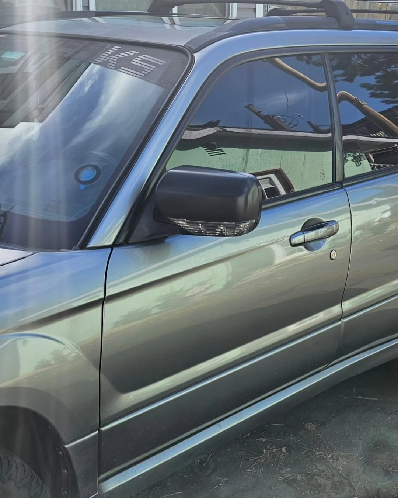
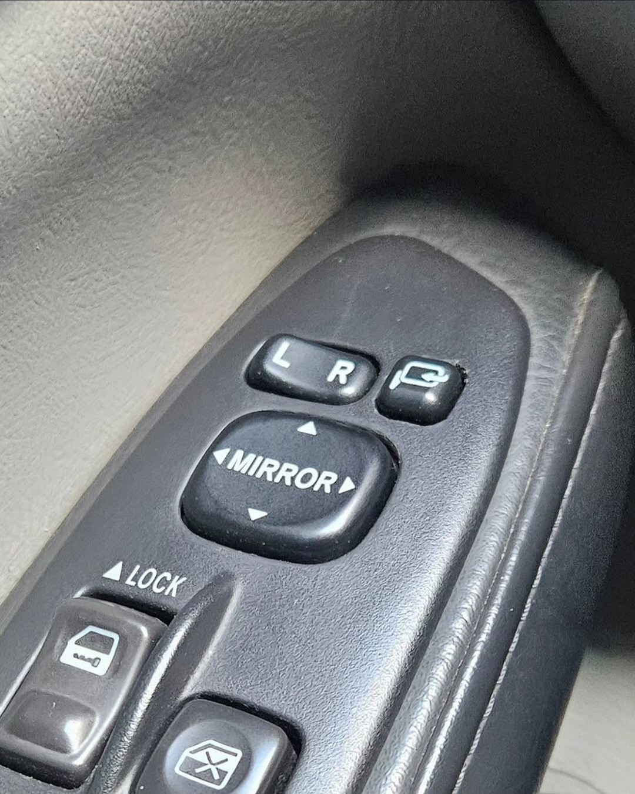
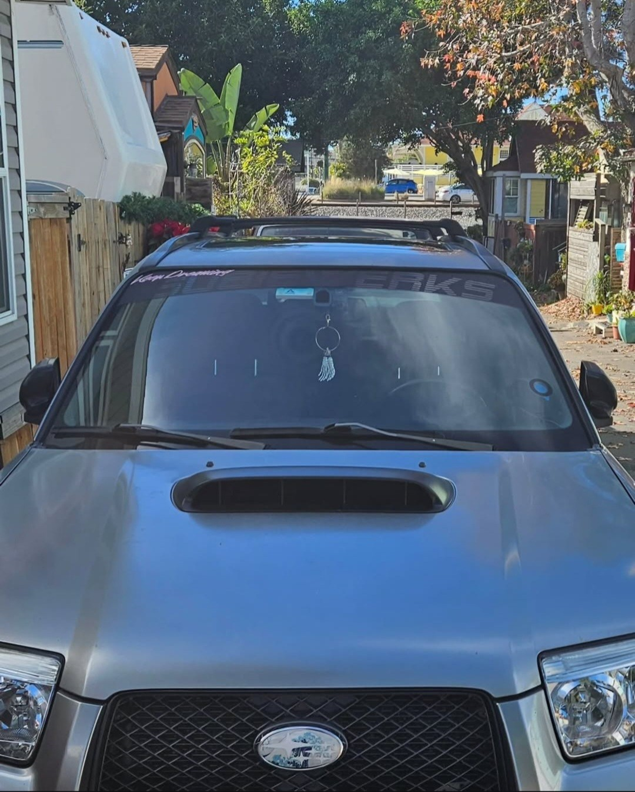
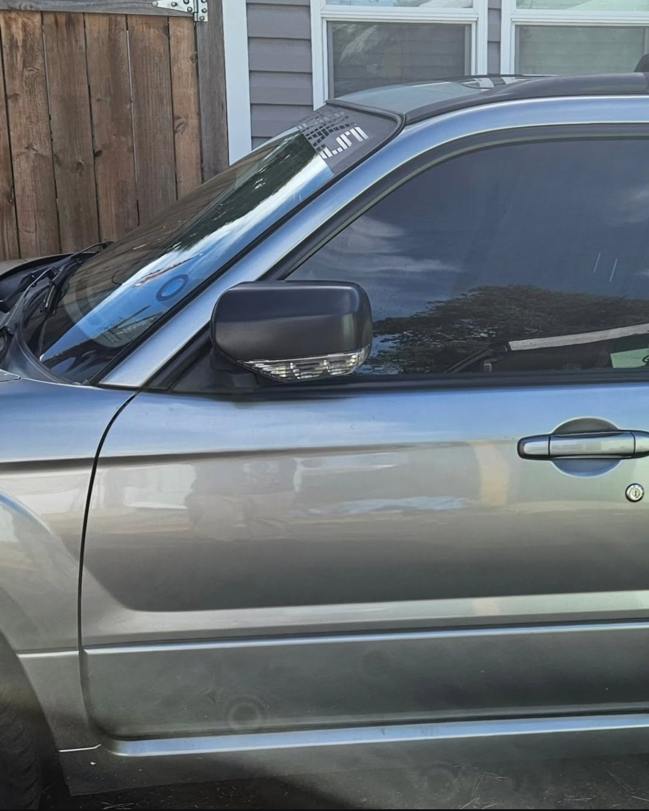

JDM Folding Side Mirrors Installation
Installed JDM folding side mirrors for added convenience, protection, and a sleek, factory-like integration.
Overview:
To enhance the functionality and aesthetics of the Forester, I upgraded the side mirrors with folding units sourced from a Japanese model, which are not available in the US market. This upgrade adds convenience and protection for the mirrors, especially useful in narrow parking spaces.
Installation Process:
Mirror Selection and Preparation: I began by removing the stock side mirrors and disassembling them to assess the components. Although the motors and bracketry from the JDM mirrors were a direct fit, I opted to combine them with my original, better-conditioned plastic trim pieces to assemble the best possible set.
Customization: The exterior trim panels of the mirrors were wrapped in satin black vinyl to match the vehicle’s other trim elements, enhancing the cohesive aesthetic of the car’s exterior.
Electrical Integration: To accommodate the folding mechanism, I installed a new switch integrated with the mirror angle adjustment on the door panel. This required running wires from the driver’s side across to the passenger side through the door gusset, ensuring all components were securely housed and protected from the elements.
Future-Proofing: While I chose not to install heated mirror lenses immediately, I prepared the necessary wiring for easy future upgrades. This allows for the potential addition of heated mirrors by simply replacing the lenses and adding the appropriate switch and relay.
Benefits:
The folding mirrors significantly increase the practicality of my vehicle, allowing me to easily reduce the vehicle’s width with the press of a button. This feature is particularly advantageous in tight driving lanes and crowded parking lots, reducing the risk of damage from passing vehicles or adjacent car doors.
Outcome:
The project was meticulously executed, resulting in a seamless integration of the folding mirrors that look and function as if they were a factory option. The addition not only improves the car’s functionality but also elevates the overall style and sophistication of the Forester.
Reflection:
This upgrade demonstrates the potential for cross-regional customization in vehicles, utilizing globally available parts to enhance local models. It reflects a blend of practicality and personalized style, tailored to meet specific needs and preferences.




